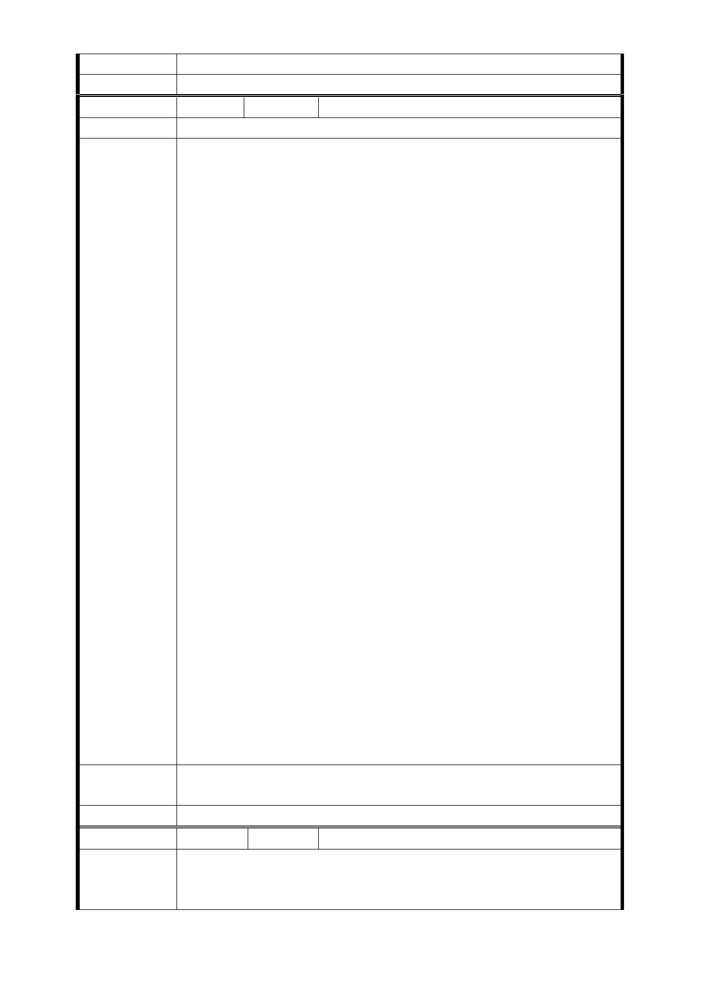

意見
委員會決議 同編號交一－1 委員會決議。
編 號 捷四-6 陳情人 石李○金
建 議 位 置 土地開發區（捷）四
為確保本區住戶參與聯合開發權益，本人對於計畫案簡報內
容有所疑慮，爰建議事項如下:
1.政府之徵收應權衡市值，亦應因地區、地段之不同而有所
差異，一樓建物之 『使用價值』在中正區南門市場（LG01）
可說是 3 倍於樓上物；今在簡報內容（五）協議價購買優
惠辦法相關規定（2）
◆ 一樓建物之土地所有人，其應抵付權值，加計原則（第
五條）
－ 商業區建物之一樓作為住宅使用者或住宅區建物之一樓
依法營業使用，加計其權值 0.5 倍。
－ 住宅區建物之一樓作為住宅使用者，加計其權值 0.2 倍。
實屬低於現今使用價值，主管機關應實地察訪，依大眾捷運
法第 7 條第 3 項規定略以：其依協議價購方式辦理者，主管
機關應訂定優惠辦法；在權責範圍內給予合理補償，符合公
平正義原則，此舉也有助於居民參與聯合開發方案；而非墨
陳 情 理 由 守舊法，枉顧民怨與地主權益的徵收，繁生不必要之抗爭。
2.賦稅之減免
增值稅（第六條）：以公有不動產抵付協議價購土地款者，分
回之開發後公有不動產，於取得後第一次移轉時，應以該土
地之原規定地價或前次移轉現值為原地價，計算漲價總數
額，課徵土地增值稅。
此部份可否依土地稅法第 39 條第 3 項規定免徵土地增值稅，
或比照都更優惠，減免 40 % ?
3.增加容積獎勵，以確保本區住戶之權益
一般都更程序可以爭取近 14 倍之容積獎勵，且舊式四、五樓
公寓專案更可享有一坪換一坪獎勵，最高可爭取到 2 倍之容
積獎勵；另案對萬大線新北市段路線計劃案之簡報內容：
LG06-2、LG07-2 與 LG08-1、LG08- 2 皆擬定變更後基準容積
率為 750 %，亦即為原容積之 2.5 倍。
因此建請比照新北市 2.5 倍之容積獎勵辦法，以確保目前住
戶之權益。
市 府 回 應 同編號捷四-1 回應意見。
意見
委員會決議 同編號交一－1 委員會決議。
編 號 捷四-7 陳情人 富○建設開發股份有限公司
1.細部計畫中對於變更為土地開發區（捷）之土地使用分區
陳 情 理 由 管制中，對於使用項目規定為：「…悉依第三種住宅相關規定
辦理；另開發大樓之地面一、二樓須供商業使用，使用項目
- 36 -